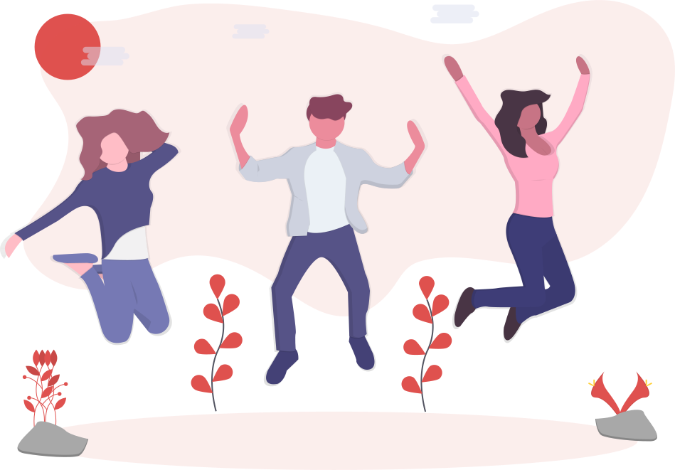
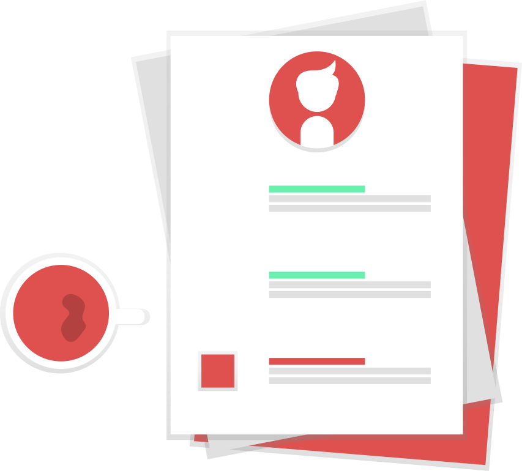
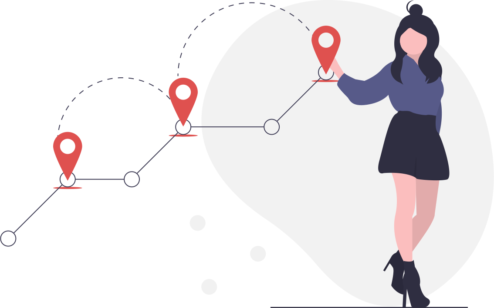
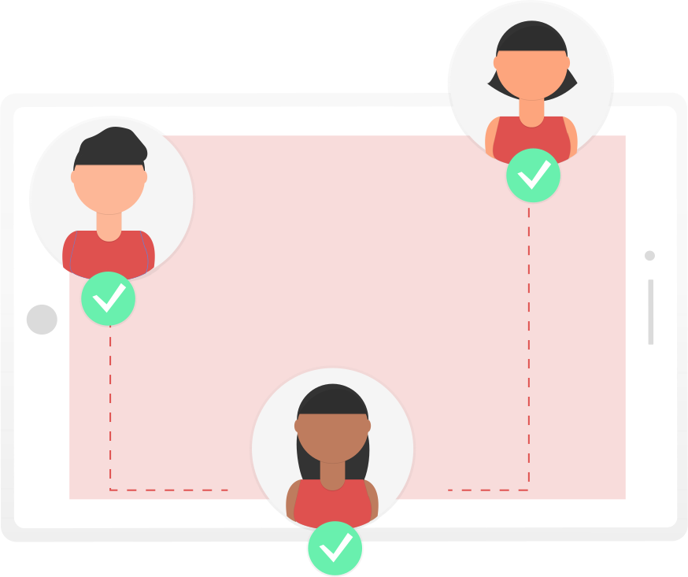
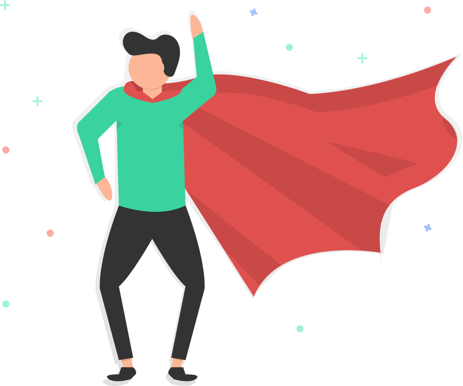

<ion-content fullscreen class="ion-padding" scroll-y="false">
  <ion-slides>

    <ion-slide>
      <div class="slide">
        
        <h2>Bem vindo ao Geo-Report!</h2>
        <p>Este é um ambiente totalmente voltado ao uso pelos fiscais em sua ida a campo.</p>
        <p>Aqui você encotrará diversos recursos que te auxiliarão e irão tornar
          o seu trabalho muito mais produtivo.</p>
        <ion-icon slot="end" name="arrow-forward"></ion-icon>
      </div>
    </ion-slide>

    <ion-slide>
      
      <h2>Agilidade</h2>
      <p>Pare de depender de mapas físicos. Aqui você terá todos os recursos necessários para cadastrar e resolver
      denúncias da forma mais rápida e simplificada possível.</p>
      <ion-icon slot="end" name="arrow-forward"></ion-icon>
    </ion-slide>

    <ion-slide>
      
      <h2>Mapeamento</h2>
      <p>Aqui você encontrará mapas que te auxiliarão na decisão de qual denúncia resolver primeiro. </p>
      <p>Tendo sua rota traçada até cada uma delas, sera muito mais fácil decidir em qual ir.</p>
      <ion-icon slot="end" name="arrow-forward"></ion-icon>
    </ion-slide>

    <ion-slide>
      
      <h2>Comunicação</h2>
      <p>Com o mapa em tempo real de todos os agentes e uma sala de chat em grupo, você conseguirá tirar qualquer
        dúvida com sua equipe e chegar a solução do problema mais rapidamente.</p>
      <ion-icon slot="end" name="arrow-forward"></ion-icon>
    </ion-slide>

    <ion-slide>
      
      <h2>Dashboard</h2>
      <p>Através da área de Dashboard, você poderá ter um resumo da situação de cada denúncia cadastrada no sistema.</p>
      <p>Além disso, terá também um histórico com as que já foram resolvidas por cada órgão.</p>
      <ion-icon slot="end" name="arrow-forward"></ion-icon>
    </ion-slide>

    <ion-slide>
      
      <h2>Pronto para ajudar a cidade?</h2>
      <p>Contamos com sua ajuda para resolver os problemas da nossa cidade.</p>
      <ion-button fill="clear" (click)="openMap()">Vamos nessa! <ion-icon slot="end" name="arrow-forward"></ion-icon></ion-button>
      <p style="font-size: 10px">Com ❤ Geo-Report</p>
    </ion-slide>

  </ion-slides>
</ion-content>
